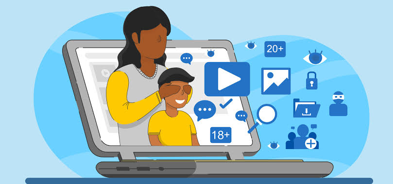

Day 23
In the digital playground where kids explore, learn, and connect, parents often wonder: How do I keep them safe without feeling like a hawk? Fear not! Here’s a lively guide to monitoring your kids’ online activity while respecting their privacy. Let’s turn this into a fun adventure!
By implementing these strategies, you're not just protecting your kids; you're also fostering a healthier digital environment. Here are some key impacts: